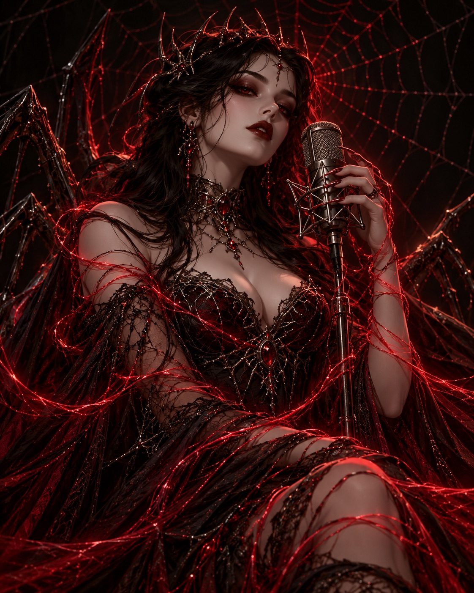

Original scripts
She writes her own material — villain monologues, dual-character scenes, and whisper scripts — and takes requests to write for other creators.
VOICE ACTRESS & SCRIPTWRITER — MANAGED BY KEY MANAGEMENTS
Welcome to Karmakaze’s corner of the dark.
Villains with velvet voices, whispers that follow you home, and horror written in her own hand — every script, every take, hers.

01 / THE VOICES
Original characters and ongoing series — all written, performed, and produced by Karmakaze herself.
Dark, deep, and growly — the brother you should never have crossed. Condescending chuckles included, free of charge.
Low, dark, monotone. He doesn’t fight on battlefields — he makes moves in the shadows of your court.
A whisper series for the late hours. Dark romance, measured pauses, and a voice that builds exactly what it wants.
The series that asks the question. The verdict is usually guilty.
Horror narration with a special co-star — her youngest sometimes lends a voice. Yes, monsters are real. They're adorable.
For the ones who stood alone. A dark-comfort series where the shadows greet you by name — and never leave your side.
02 / THE CRAFT
People started asking her to write their scripts before she realized how rare that is. It’s rare.
She writes her own material — villain monologues, dual-character scenes, and whisper scripts — and takes requests to write for other creators.
From growling morticians to monotone schemers to voices soft enough to be dangerous — recorded take after take until it hits.
A horror buff reading horror — stories, legends, and the occasional blooper reel, because even monsters crack up.
03 / COMMISSIONS
Key is putting the final touches on Karmakaze’s service list. It will live right here.
In the meantime, you can reach out through Key Managements with script requests, voice work, and collab questions.
04 / FIND HER
Say hi, or send work her way through her management.